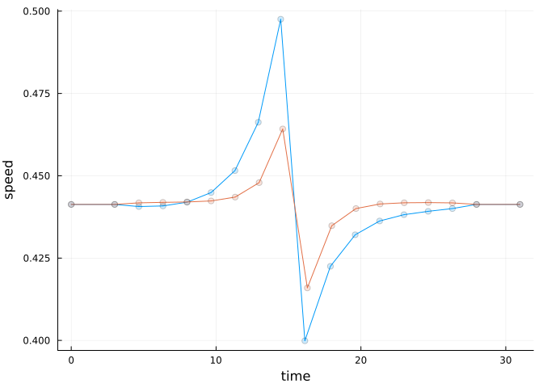
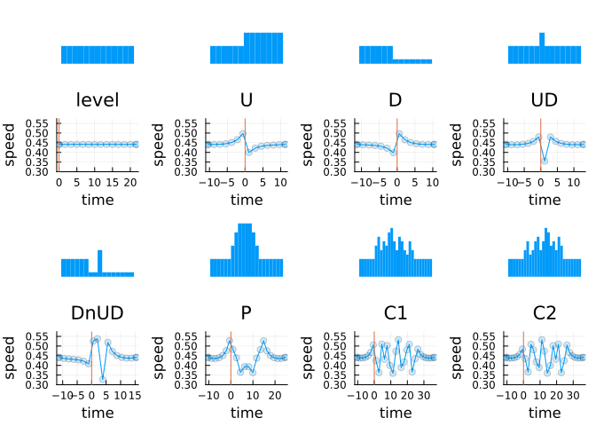
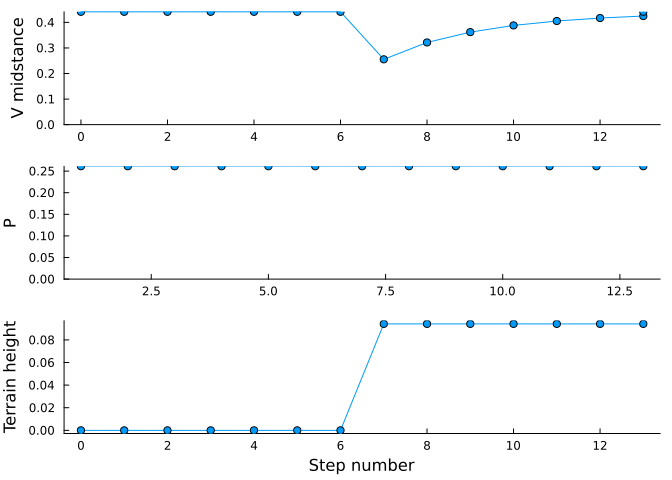

A simple walking model is optimized to walk over uneven terrain. The objective is to minimize energy expenditure, quantified by the push-off work performed with each step. The optimization here seeks to traverse a stretch of terrain, starting and ending at level walking, and taking the same amount of time as level walking.
Walk over a single upward step
The optimal compensation for a single upward step is to speed up beforehand, lose speed stepping upward, and then speed up again afterward. The optimal speed-ups both occur over several steps but have different shapes: the first one increases nearly exponentially with time, and the second one resembles a saturating exponential. The optimization is described by Darici et al. (2020), and tested with human subjects experiment (Darici and Kuo 2022).
The optimization is performed with optwalk, which computes the minimum-work trajectory for nsteps of walking. A terrain may be provided by an array of height/angle changes δs.
All quantities are plotted in dimensionless form, with base units of body mass \(M\), leg length \(L\), and gravitational acceleration \(g\). Thus speed is normalized by \(\sqrt(gL)\) and time by \(\sqrt(L/g)\). For a typical leg length of \(L = 1\,\mathrm{m}\), the equivalent dimensional speed is about 1.25 m/s, and step time about 0.55 s.
Use varying step lengths to walk over a single upward step
The model above uses fixed step lengths, whereas humans adjust step length with speed. The model can also be constrained to step at the preferred step length vs speed relationship of human, resulting in a different amplitude of speed fluctuations, but a similarly-shaped speed profile.
Code
# WalkRW2ls has varying step lengths according to preferred humanwstar4ls =findgait(WalkRW2ls(α=0.4102,safety=true), target=:speed=>0.4789, varying=:P, cstep=0.35, vmstar=wstar4s.vm)varyingresult =optwalk(wstar4ls, nsteps, boundarywork=false,δs=δs)plotvees(upstepresult,boundaryvels=upstepresult.boundaryvels, speedtype=:midstance)plotvees!(varyingresult,boundaryvels=upstepresult.boundaryvels, speedtype=:midstance)

Walk over a bunch of terrains
The terrain is specified as a series of angle/height changes each step. The task is to start and end with nominal level walking, and to traverse the terrain in minimum energy, in the same amount of time as for level walking.
Note that terrain profile is not plotted to scale.
Code
## plot bumps and speed trajectories of all 8 terrainsnumStepsBefore =6; numStepsAfter =6# all terrain trajectorieswstar4s =findgait(WalkRW2l(α=0.4102,safety=true), target=:speed=>0.4789, varying=:P)δs = ( # terrain defined a sequence of height or angle changes from previous step"level"=>[zeros(numStepsBefore); [0] .* B; zeros(numStepsAfter)], # level "U"=> [zeros(numStepsBefore); [1] .* B; zeros(numStepsAfter)], # Up"D"=> [zeros(numStepsBefore); [-1] .* B; zeros(numStepsAfter)], # Down"UD"=> [zeros(numStepsBefore); [1, -1] .* B; zeros(numStepsAfter)], # Up-Down"DnUD"=> [zeros(numStepsBefore); [-1, 0, 5/3, -5/3] .* B; zeros(numStepsAfter)] , # Down & Up-Down"P"=> [zeros(numStepsBefore); [ 1, 1, 1, 0, 0, 0, -1, -1, -1] .* B; zeros(numStepsAfter)], # Pyramid"C1"=> [zeros(numStepsBefore); [ 3, 2, -3, 2, -1, 3, 1, -3, -2, 3, -1, -2, -1, 3, -2, -2] .* B/3; zeros(numStepsAfter)], # Complex 1"C2"=> [zeros(numStepsBefore); [ 2, 2, -3, 1, 2, 1, -3, 2, 3, -1, -3, 1, -2, 3, -2, -3] .* B/3; zeros(numStepsAfter)], # Complex 2)p =plot(layout=(4,4), legend=false); pslotnum(n) = n + (n>4 ? 4:0) # plot in slots 1 - 4, 9 - 12for (i,(terrainname, terrainbumps)) inenumerate(δs)# plot the terrain profile in space (not to scale)plotterrain!(p[pslotnum(i)], cumsum(terrainbumps)./B .* bumpHeightDimless, setfirstbumpstep=true,ylims=(-0.1,0.2),showaxis=false,grid=false)# minimum-work strategy for terrain results =optwalk(wstar4s, length(terrainbumps), δs=terrainbumps, boundarywork =false) # optimizing push-offs (boundarywork=false means start from nominal walking)plotvees!(p[pslotnum(i)+4], results, boundaryvels=results.boundaryvels, speedtype=:midstance, setfirstbumpstep=true,title=terrainname, tchange =0, ylims=(0.3,0.575))vline!(p[pslotnum(i)+4], [0]) # mark where the first uneven step isenddisplay(p)

Walk over a simple bump with no compensation
Model walks with constant push-offs for steady walking, and encounters the up-step without any compensation. As a result of the unexpected upward step, the model loses speed, and with repeated constant push-offs, will eventually regain nominal speed. The number of regaining steps is described by the persistence distance. This model expends the same energy as level walking, but accumulates a relative time deficit. The same push-off impulses are applied in both cases, but the no-compensation case loses speed, resulting in slightly less work. More detail is available from Darici, Temeltas, and Kuo (2020).
Code
upstep = δs[2][2] # up-step terrain, get the terrain arraynsteps =length(upstep)nocompresult =multistep(wstar4s, Ps=fill(wstar4s.P,nsteps),δangles=upstep,boundaryvels=(wstar4s.vm,wstar4s.vm))println("No compensation total work cost = ", nocompresult.totalcost)println("Nominal walking total work cost = ", upstepresult.totalcost)p =multistepplot(upstepresult, legend=false, boundarywork=false)display(p)plot(cumsum(upstepresult.steps.tf),label="nominal level")plot!(cumsum(nocompresult.steps.tf), xlabel="step",ylabel="accumulated time", label="no compensation")println("Final time deficit = ", -sum(upstepresult.steps.tf)+sum(upstepresult.steps.tf))
No compensation total work cost = 0.4433306466750797
Nominal walking total work cost = 0.5538343313152624

Final time deficit = 0.0
Walk over a single bump with a reactive compensation
Here the model does not anticipate the up-step and loses speed and time upon first contact with it. Thereafter, the model compensates and catches up to the level ground model by looking ahead and adjusting the trajectory of push-offs. This strategy therefore actually anticipates and optimally compensates for all steps other the first uneven one. It is almost impossible to regain time without some knowledge and goal for the terrain ahead. More detail is available from Darici, Temeltas, and Kuo (2020).
Code
nbump =Int(floor((nsteps+1)/2))reactresults1 =multistep(wstar4s, Ps=fill(wstar4s.P,nbump),δangles=upstep[1:nbump],boundaryvels=(wstar4s.vm,wstar4s.vm))reactresults2 =optwalk(wstar4s, length(upstepresult.steps)-nbump, totaltime = upstepresult.totaltime - reactresults1.totaltime,boundaryvels=(reactresults1.steps[end].vm,wstar4s.vm), boundarywork=(false,false))reactresult =cat(reactresults1, reactresults2)println("Reactive contrl total work cost = ", reactresult.totalcost)println("Up-step min-work control total work cost = ", upstepresult.totalcost)multistepplot(reactresult,boundarywork=false) # plot concatenation of two simulationsp =plot(cumsum(upstepresult.steps.tf),label="up-step min-work")plot!(p, cumsum(reactresult.steps.tf), xlabel="step",ylabel="accumulated time", label="reactive")display(p)println("Final time deficit = ", -sum(upstepresult.steps.tf)+sum(reactresult.steps.tf))
Reactive contrl total work cost = 0.5756333115295249
Up-step min-work control total work cost = 0.5538343313152624
There is also extensive Matlab code for an earlier implementation of the same model. See Matlab directory. There is very limited documentation of this code.
Experimental data
The data from accompanying human subjects experiment are available in a separate data and code repository. The code is in Matlab, and the data files are in .mat format, which is compatible with HDF5.
References
Darici, Osman, and Arthur D. Kuo. 2022. “Humans Optimally Anticipate and Compensate for an Uneven Step During Walking.” Edited by Lena H Ting. eLife 11 (January): e65402. https://doi.org/10.7554/eLife.65402.
Darici, Osman, Hakan Temeltas, and Arthur D. Kuo. 2020. “Anticipatory Control of Momentum for Bipedal Walking on Uneven Terrain.”Scientific Reports 10 (1): 540. https://doi.org/10.1038/s41598-019-57156-6.